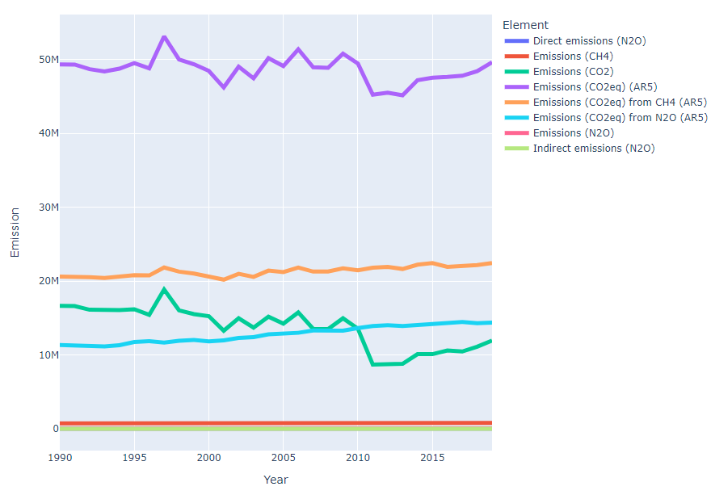
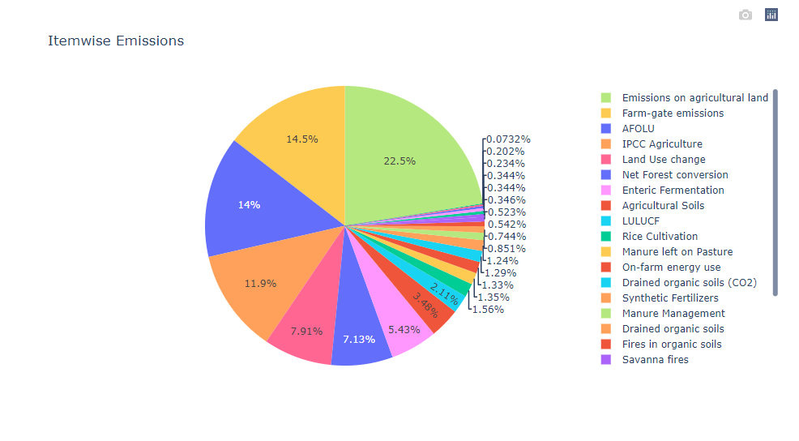
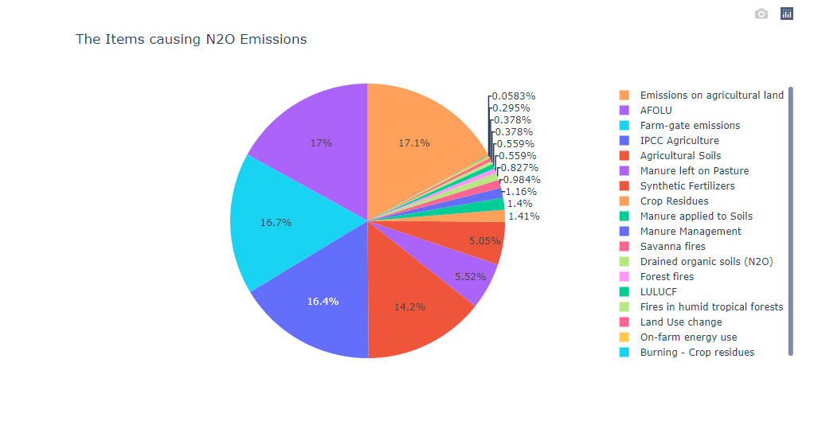
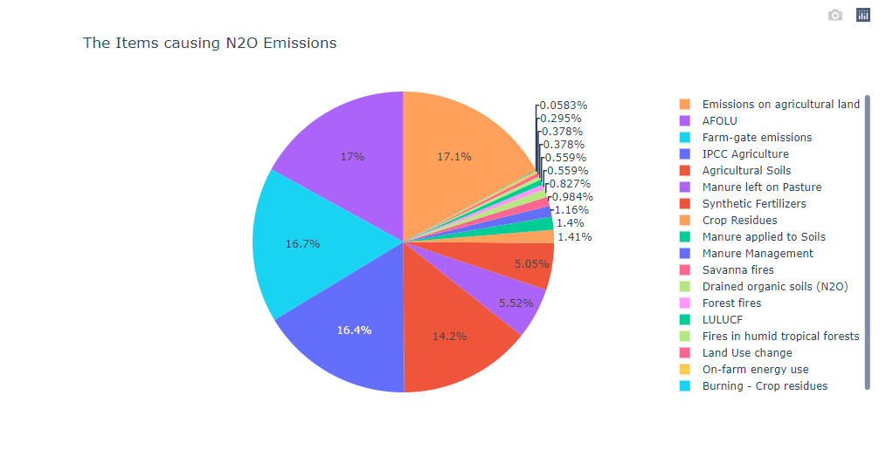
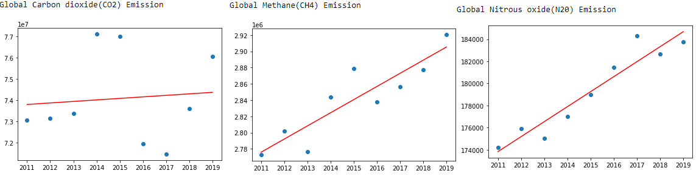
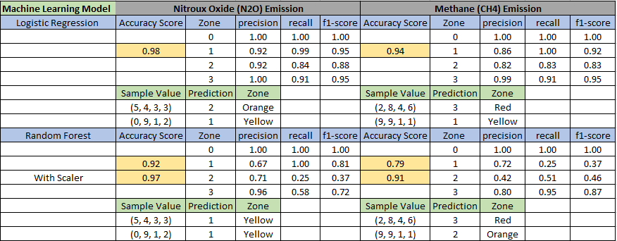

Agriculture and Forest Land Emission
One of the most polluting industries
Time to change the way we farm
Overview
Agriculture is responsible for one-third of non-CO2 greenhouse gas (GHG) emissions in the world. Changing agricultural practices and shifting to a diet that's devoid of meat and dairy products could reduce the Emission. While there is much less methane and N2O in the atmosphere, these gases have different capacities to trap heat. As a result, they are assessed using Global Warming Potential, which compares the ability of 1 kg of each gas to trap heat over a 100-year time horizon. Using this measure, methane has 25 times the warming potential of CO2, and N2O 298 times higher than CO2.
Below is our Element graph over the period of year:

Items Contributing to Emission
Agricultural activities like crop and livestock production for food contribute to emissions in a variety of ways: Some of the items that contribute to N2O emissions from agricultural lands include Manure Management, Synthetic Fertilizers, Manure applied to Soils, Manure left on Pasture, Crop Residues, Burning - Crop residues, Land Use change, Drained organic soils (N2O), Savanna fires, Forest fires and On-farm energy use.
Livestock, especially ruminants such as cattle, produce methane (CH4) as part of their normal digestive processes. This process is called enteric fermentation, and other Items such as Manure Management, Rice Cultivation, Burning - Crop residues, Land Use change, Savanna fires, Forest fires, Fires in organic soils and On-farm energy use.
Below are the pie graph of the Items list:

 

Machine Learning
Machine learning (ML) models are used to study complex environmental phenomena with high variability. In our ML model we are going to analyze Methane (CH4) and Nitrous Oxide (N2O) emissions as it contributes more on Agriculture and Forest land emissions. We are doing Linear Regression model to Analyze our data deeply in both categories as well as the world data.
Global Green House Gas Emission Linear Regression Analysis:

As the prediction of future Emission depends on many factors like soil temperature, air moisture, Volumetric Water Content(VWC), we are classifying the Emission values into different Zones for N2O & CH4 Elements. Data Preprocessing include steps like Categorizing (Element, Item, Year, Population, Emission) features, Classifying the Target variable (Zones into four different categories like Red, Orange, Yellow and Green), which intern called Multiclass classification.
Classification Algorithms
Logistic regression is a simple yet very effective classification algorithm. Multinomial logistic regression is an extension of logistic regression that adds native support for multi-class classification problems. And its always good to try multiple models to compare the results. So, the Random Forest works well as it reduces overfitting in decision trees and helps to improve the accuracy. It is also flexible to both classification and regression problems and works well with both categorical and continuous values.
Below diagram shows the Accuracy score and other Results:

The results show that the Logistic Regression Algorithm classifies the Emission more accurately than Random Forest Classifier. Since our data is Skewed (Stratify was used) and Imbalanced which results in more number of items in specific categories.
This might be the reason that our Logistic performed better than the Random Forest. Also, Logistic regression performs better when the number of noise variables is less than or equal to the number of explanatory variables.
(Noise variables - Difficult or impossible to control; Explanatory Variable - manipulated in an experiment by a researcher). However the Data is classified perfectly according to the Emission and lets aim for all the countries in Zone 0 (Green).
Time to think of the ways to reduce the greenhouse gas emission for a safer and a better future. Microbial Ecosystems, Manure Management, Diatary Lipids, Carbon Sequestration, Switching the fuels and Manufacturing Energy On-farm. Zero Emission!